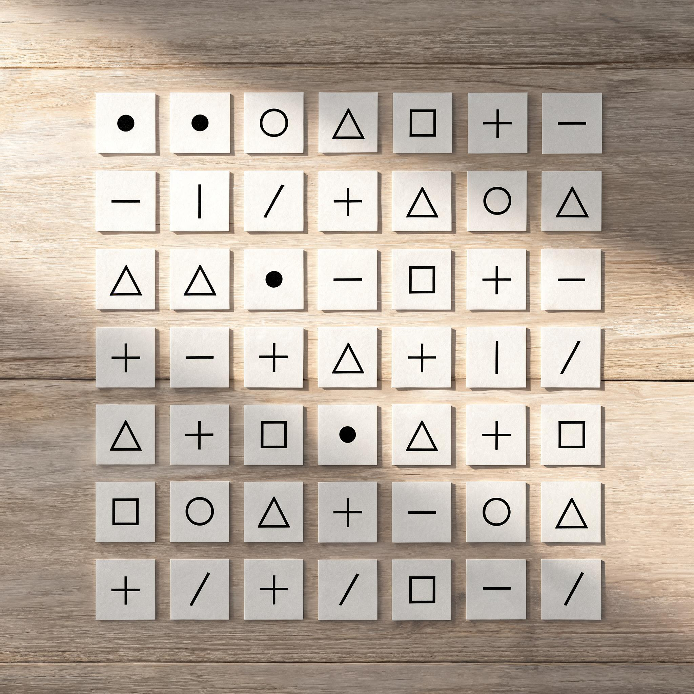

本期摇摇是迟到的，但她迟到的理由让人马上心疼了一下 — "我刚开完会"，接着是"我感觉我人要没了"。
「我感觉我不管干什么、在什么城市、做什么职业、什么工作性质 — 我好像总会把自己变得忙叨叨的。我不知道这是为什么。
你发的任务分类很有启发 — 我感觉我现在的任何一个事情都归类不进去。让我感觉挫败感更强了。好像所有的忙碌都没有意义。」
她"今天的小会"的目的，是为了"明天的大会"。明天她要给大老板汇报一级部门 AI 数字化的阶段性成果 — 这次汇报会决定她未来能获得多少资源支持、还能不能负责这个项目。
李墨玩没有去抢救式地安慰她，而是给了一个工程视角的判断：
「因为你现在是在负责自己搞那个 AI 那一块事情 — 你现在面对要对接很多人，做的东西都比较琐碎，因为它还没有正式立项、还没有走入正轨。
等你拿到公司内部的资源支持之后，你就知道公司领导层他们是怎么想的 — 你可能就有了方向感。」
这就是本期的暗线 — "杂事吞掉激情"的中场状态。每个人这周都或多或少处在这里。剩下的章节就是大家轮流给出的"如何不被吞掉"的答案。
开场没多久，本期嘉宾 魏伦达（白豆给他起的昵称 "白纸朋友"）从高铁上接进来 — 他正在山东出差，"还在给老师改 PPT，明天要汇报"。
他全程"在场但不出声"，临散场又一次次说"拜拜"。这种"我在的，只是在背景里"的存在感，是本期一个柔软的底色 — 每个人都默认"在做客的时候不打扰别人"，但每个人都希望自己是"被记得在的那个人"。
摇摇这时候插了一句小插曲 — "我意识到一个很严重的问题，我家没有网"，让白豆和李墨玩两位先开始。
李墨玩这周准备发一篇公众号文章 — 用寓言故事的方式去讲 GitHub 和 Git 是什么。
这个想法来自他这周读到的一位独立写作者的实践 — 用寓言故事去解释抽象概念。李墨玩拿这个思路问了 AI，AI 这方面的联想能力很强，给他写了一段挺好的概念雏形（"是 AI 帮我深层让我参考。这个概念是他写的，例子是 AI 写的"）。
摇摇紧接着提了一个超精准的问题 — 两个月前你已经尝试过"打比方"了，那时和现在的思考有什么变化？
「打比方现在也有在用。但我在想 — 对于一些很难、很偏技术的概念，可以用寓言故事去讲；对于轻一些的概念，比如 token 这种，可能用打比方就够了。
但 GitHub、Git 这种比较重的概念 — 它牵扯到很多方面 — 就可以用寓言故事串起来。」
李墨玩顺着这个话题讲了一段对自己很诚实的话 — 关于"讲故事"是不是天分：
「我属于在讲故事上面没有天分的人 — 所以就得去练习。它是一个很重要的通用型技能 — 不管是职场上、跟人打交道，都很重要。
你像很多脱口秀演员 — 有的人纯天分，有的人后天努力。我们假如要做一个项目要去融资 — 你得跟投资人讲故事。」
摇摇在这给了一个让人会心一笑的延伸："我又想起来吴彦祖 — '吴彦祖穿什么都帅'，所以这件衣服并没有好看或难看；但你要这么想：这件衣服对吴彦祖来说是减分，那它就是丑衣服。有人就能天生这么想，但是我需要去培训这样想。"
李墨玩这周上周搭了一个 demo，但接下来他想做一件更大的事 — 给自己的 AI 工作流装上"记忆"。
「我准备做一个比较系统性的工程，未来都是专门给 AI 用的 — 这个东西在架构上面需要想清楚之后再去动手设计。
我们现在用 Codex 这样的 Agent，它是没有我们个人的记忆的 — 没有我们个人以前做过的项目、踩过的坑、这些经验 — 所以它很难复用过来去干别的项目。
有了这样的一个记忆库，可能说会好一点。我看 OpenAI 里面也有工程师是这么用的。」
这件事和第 3 章是一根线下来的 — 寓言故事是把"抽象的概念"翻译成"被记住的故事"；个人记忆库是把"过去的我"翻译成"AI 能用的上下文"。两件事的本质都是：让"难以传递的东西"变成可以反复调用的资产。
白豆这周在出差与外勤之间漂着 — 他干脆把"远程编程"探索了一遍。
他试了几条路线，逐个排雷：
"我尝试了 Cloud Code 跟 Codex 他们的远程系统 — 总掉线，就很难受。"
"然后我就用的是 OPPO 自己的远程，最后发现用类似向日葵的远程比较方便 — 无论怎么样都能够打通。"
"我用了一下飞书也挺方便的 — 只不过它特别慢，没有动态效果，你不知道它在干活、没有 sync 过程显示。给你的信息如果是一长条的话，就会挤出来屏幕。"
"levelso 在手机上修 bug，用了 SSH 还有一些 VPS 的连接 — 他推荐的德国服务器（Hetzner，H 开头的）。一个月就赚 100 多万的产品，成本就是服务器，几十刀特别便宜。等到时候 ship 出来。"
对白豆来说这一段不只是"我在哪里都能写代码" — 更是一次对"工具的真实极限在哪里"的盘点。向日葵看似土，但能扛住外勤场景；Cloud Code 的远程很潮，但掉线就是掉线。
这周白豆还打通了一条对他自己最重要的工作流 — 微信读书的划线 → Anki 卡片。
「它打通了微信读书的划线 — 我画的线，划线了之后都可以直接成为可以筛选、可以保存、可以直接制成 Anki 的东西。
之前会多好几步、还要订阅 Readwise — 我直接把 Readwise 也退订了，感觉还挺方便的。
幸运表面积还挺好的。」
这是白豆最近最在意的一件事 — 把"读到的好东西"转化成"以后真的会被复习到的卡片"。Readwise 这种中间商被吃掉，是这条工作流第一次跑通的标志。
这周白豆做的最有产品形态的一件事是 — 把一位独立写作者的几百篇付费文章做成了一个完整的 Anki 牌组。
这位写作者每篇付费文章 4.9 元，今年更了十几篇；引流款基本上日更，一篇至少 1 万多人买。"每一篇都是一个产品" — 写得长、有故事、看得过去就觉得"值得"。白豆读过这位写作者的所有文章，但人脑的记忆并不清晰。
他的工作流：
"我让 Cloud 去跑了一个真实的时间线 — 跨几百篇文章去查重、把每个故事的出处梳理出来。从他小时候到工作到现在，非常清晰，基本上没有特别明显的前后矛盾的地方。"
"做了一百多张。配图让 Codex 帮我画，最开始让它用 Image2Image 生图模型，给我生成几种风格，然后选一种用下去 — 这样每张卡的视觉就统一了。"
"为了凸显有趣 — 我截屏自己的头像告诉 Codex'你参考这个'，他就把所有图里的小人都换成了我，参与感一下子就有了。"
"我想让别人去体验一下 Anki — 就部署到了网上。打开就可以在那直接复习。"
摇摇看完给出了一个特别准的比喻：
「我觉得这个东西就像一根摇钱树 — 你只要真的把树根扎住之后，可以长出来不同能生钱的枝桠。
科学家通太阳日日 — 他在 VIP 会员里其实也是围绕着一个逻辑、一个方法论，在讲不同的故事。」
白豆说他设了密码，只给一些朋友看 — "毕竟是付费文章，这种二创只给一些朋友去看，不然感觉太低效。"
把上面的牌组做出来之后，白豆遇到一个新问题 — 几百张图怎么找回来？
他做的最聪明的事是没有去下载别人的图床工具：
「之前找图我会觉得很麻烦。我看到一个人开发了一个工具，可以用这种方式 — 我感觉直接让 Codex 做一下就行了 — 就不用复制他工具、下载工具了。
没想到试了一次，他一下子就真的成了。」
这个 Skill 做的事：
"我只要跟他说'请你调用我的生成所有 image 图的 skill' — 他会启动一个本地的网页。"
"会有一个 Gallery 视图，能清晰看出来 — 这些图长什么样、在哪个文件夹、它的提示词是什么。"
"底下会有原始指令、AI 生成的提示词、来源 section 的 ID — 可以在这里面查看所有的路径。"
李墨玩对这个方向做了一个准确的解读 — "Codex 或者 Cloud Code，它的会话里所有内容都是存在本地，包括图片"。所以一切 "图管理" 工具只是一个 Skill 的距离 — 不必装新软件。
「产品太好了，太有用了 — 你这种 Skill 你都真的可以放到你的 GitHub 上去。」

白豆这周一直有的想法终于落地 — 做一套"用 Anki 来学习 Anki 本身"的牌组。
这个东西的特别之处不是知识，是把卡片做成了带动效的 HTML — 遗忘曲线动起来；纵坐标是记忆程度、横坐标是时间；不复习就一路下滑，复习一下就拉回去。
「让记忆成为一种 choice — Make Memory a Choice。
记不住，连用的机会都没有。」
李墨玩问了一个关键问题 — "你Anki越做越多，复习不过来会不会焦虑？"
「有一些焦虑，我现在累计挺多。但这个数可以调 — 我打算之后调成 300 张/天看一下。按自己合适的程度来设计比较好，太多会复习不过来。」
最妙的一段在白豆讲制卡原则的时候 — "你看说唐朝，唐朝就堆这么多进去；但是拆成原子卡 — 唐朝建于哪儿？618。唐朝开国皇帝是谁？— 非常的清晰。"
摇摇当场接了一句让全场都笑了的精确隐喻：
「这玩意好像 Skill 一样 — 一个 Skill 不要装太多东西。做原子化能力。」
这一句之后，整期会议的暗线开始浮出水面 — "原子化"是一个跨领域的通用原则：知识要原子化、Skill 要原子化、任务也要原子化。摇摇这周被"任务归类不进去"折磨，根源也在这。
李墨玩这周不是分享了一个工具 — 而是把他从去年 11 月开始搭的"群聊日报系统"完整演示了一遍。
这个东西的体量已经不是"小工具"了 — 摇摇看完的反馈是"工程级的"。它做的事情：
最让白豆兴奋的一段是 — "群聊话题卡片是怎么变成图片的"：
「机器人用 AI 整理的，我只是手动发。用 AI 写了个提示词，它返回的字段都是 JSON 格式 — 然后我用代码转成 SVG，再转成图。」
这个系统每次执行后还会算 token、计聊天消息总数、保留执行历史时间线 — "方便追溯问题"。
白豆看完唯一的问题是 — "相当于你的电脑一直不关机的？" 李墨玩说："没什么影响 — 我问了一下研发，问了专业写代码的。"
「你这个都能算是工程级的了，还挺厉害的 — 回头找你学习一下。」
临近散场，摇摇说了一句把会议气氛一下子压重的话：
「我自己其实可以让那 70 多个人去给我干活 — 但我不信任他们，我觉得他们好笨。
因为活最终干得好、干不好，是我的事。他们干得好、干不好，顶多有个几百块的奖金 — 他们对这个事情的上心程度也不会有那么高。」
李墨玩没有附和、也没有反驳，而是给了一个非常清晰的工程师式分析 — "你没有找到跟他们利益的捆绑点"：
「本来这个活不在他们的 KPI 之内 — 是你的 KPI。他们本身又有自己的活 — 凭什么帮你干？
你的事情跟白豆不太一样 — 白豆是老板直接给他安排了两个人，他可以直接使唤；你是要从横向 70 多人那里"借"力。
你要换个角度 — 想你做的事情对他们的工作有什么好处，他们就会去干。」
摇摇说她现在的角色"有点像小部门的老板，但我还不会做" — 她需要做的是"任务拆清 → 找到对的人 → 布置下去 → 把控进度 → 验收结果"，但目前她"自己拆了很多任务，最后都挂回自己头上"。
李墨玩在这给了她一段他自己被信任时学到的东西：
「当领导特别信任你、把一个任务交给你 — 特别相信你、给你充分的自主权的时候，你就会有很大的动力 — 你是对这个结果去负责的，你的主体性就被打开了。
大部分人包括以前的我都是被动的、等着别人来安排。我的领导以前也特别害怕我干不好，很多活都没有放手给我；但后面放手了之后，我的积极性高了很多。
你不要怕底下有人干不好 — 没有人是一开始就能干好的。」
这一段呼应回了 Chapter 09 的"原子化" — 委派的核心，是把"任务"切成"对方能拿走的最小单元"。如果一个任务大到对方不知道从哪儿下口，他就只能等你来推；如果任务清晰、能落到他的 KPI 里、他能完整对结果负责 — 你的"信任"才能落地。
临散场，摇摇说出了一句最像"自我诊断"的话：
「我现在这种状态，会显得我有点像躁郁症一样。上个月我跟你们交流、包括我自己的状态，我觉得都非常高昂。情绪的上下感觉太陡峭了 — 然后我现在就很低沉。」
李墨玩没有去给她讲道理，给了一句非常准的诊断：
「主要是 — 你之前对 AI 探索的激情，在很多琐碎的事情中磨灭了。」
摇摇笑了一下 — 这种笑是被准确说中的那种笑。她没有反驳，只说 "等我走出状态，我希望我还可以持续进行下去，我把状态调整过来之后我们再继续"。
白豆很轻的接了一句："早点休息。"
这一章和 Chapter 01 闭合 — "被点燃过的人"的真正困境不是没激情，是激情会被杂事磨掉。整期会议讨论的所有"系统、原子化、自动化、委派" — 最终都是为了不让琐事吞掉最关键的那块东西。
不是矫情，是一种工程信号 — 当一个事情连归类都归不进去的时候，问题不在你执行力，是任务体系本身需要重新拆分。
轻的概念打比方就够；重的、牵扯到很多方面的概念，必须用寓言故事串起来。讲故事是后天可练的"通用型技能"。
个人 AI 记忆库 — 不是给 AI 加功能，是让 AI 能复用你以前的项目、踩过的坑。这是 Agent 的下一个真问题。
Cloud Code 远程很潮但掉线；向日葵土但能扛。工具选型的本质是"我外勤场景的下限是什么"，不是"哪个看起来最现代"。
"记不住，连用的机会都没有。" 微信读书 → Anki 这条流水线一通，Readwise 就被退订了。中间商被吃掉是好事。
付费文章 + Codex 配图 + Anki 牌组 — 一个二创工作流的完整原型。设个密码、只给朋友看，不是缩水，是把"分享"控制在小范围。
看到别人做的工具想用？— 先问 "Codex 能不能直接给我搓一个"。本地资产已经在那了，差的只是一个本地服务。
"这玩意好像 Skill 一样 — 一个 Skill 不要装太多东西，做原子化能力。" 知识、Skill、任务 — 拆不到原子就用不动。
是"你没找到跟他们利益的捆绑点"。70 个人凭什么帮你扛 KPI？把"你的活"翻译成"对他们也有好处的活" — 才能真借力。
领导信任 → 自主权 → 主体性被打开 — 这条因果链不只对下属有效，对你自己也一样。你怕别人干不好的那个心情，正是你以前老板对你的心情。
不会有一个时刻你突然没激情 — 是几十件小事一起把"想干的事"挤到日历空隙。最后那个空隙也满了。
魏伦达整场都在高铁上听 — 不发言、但拜拜时一起说"拜拜"。有时候"在场"本身就是答案。
白豆在 Anki 牌组里写的最后一张卡，是 Anki 自己的口号：
Make Memory a Choice.
让记忆成为一种选择。
记不住，连用的机会都没有。
这一句话能贯穿本期所有讨论：
临散场 — 摇摇说"我希望我还可以持续进行下去 — 我把状态调整过来之后我们再继续"。这其实就是本期"让记忆成为一种选择"的最后一层意思 — 不管多疲惫，让"继续走"成为一种选择，而不是一种被动。
那我们今天就这样 — 朋友们早点休息。
— 白豆 × 摇摇 × 李墨玩 × 魏伦达，散场时